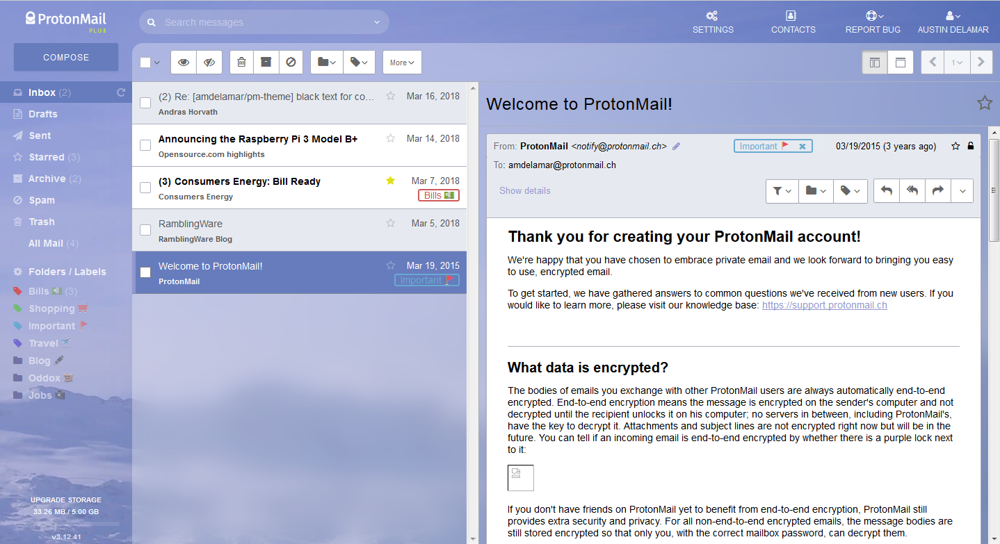

Custom Themes for ProtonMail
( 2 min read )
I’ve been a user of ProtonMail since 2015. Tomorrow marks my 3 year anniversary so to speak, of when I ditched Gmail and switched to ProtonMail.
I wrote about this last year, and my reasons for dumping Gmail haven’t changed.
If you’re interested in taking back your email privacy, I encourage you to give ProtonMail (PM) a try. Its free to try and has more to offer now than before when I signed up. But today I wanted to highlight the custom themes I’ve been diligently working on.
The web app for PM is simple and clean. But for some users like myself, we wanted a little bit more customization than initially offered.
Thus, I created the pm-theme project and have tried a hand at tweaking the colors of the web app. Now PM users can download/copy and override the default colors of their inbox. All for free, and easy to extend. If you’re a PM user, you can try out a new theme in seconds!
I built 3 main themes, Dark, Flat, and GM (like Gmail but not exactly).
Today I’m uploading a background image theme, where the Swiss Mountains are behind the inbox. Its pretty fancy if I might say so myself.

/* Copy this line into ProtonMail's custom theme box: */
@import url(https://amdelamar.com/pm-theme/themes/bg-image-theme.min.css);Its actually more difficult than I thought to override the CSS styling and default colors of a website, especially one that continuously updates every week. But its been fun to tweak and try out fun CSS tricks and grow my skills in front-end development as well. Since I mostly program in back-end services for my day job.
Anyway, if you’re a PM user I hope you enjoy the themes, and if you’re not a PM user, sign up today for free. Give it a shot like I did.
Published: Mar 18, 2018
Category: privacy